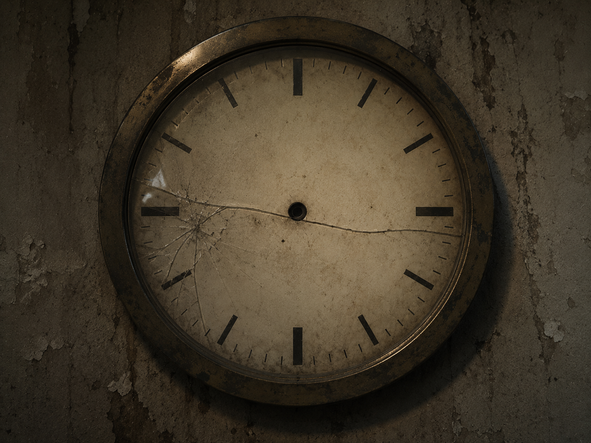

▒▒▒▒▒▒▒▒▒▒▒▒▒▒▒▒▒▒▒▒▒▒▒▒▒▒▒▒▒▒▒▒▒▒ · D E S C E N T · 10 / 40 · ▒▒▒▒▒▒▒▒▒⊚▒▒▒▒▒▒▒▒▒▒▒▒▒▒▒▒▒▒▒▒▒▒▒▒

Turn after turn. Thirty-one of them.
On the thirty-first, something began to answer.
They had built a thing that could be asked.
hold the asked word to the cracked glass. it answers with each letter's far twin — a meeting z, the near becoming the distant.